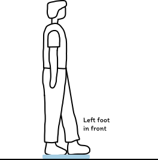
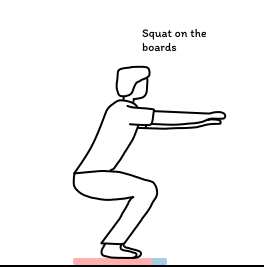

- On the board
- 72.0 kg
- Left · right
- +0.00
- Back · front
- +0.00
- Sway, last 5 s
- 0 mm
Simulated with the toolkit’s formula. Move your pointer over the board to shift the weight.
What’s in the toolkit


Specification
The values shown are the defaults. Rows marked Configurable can be changed in the settings or for each session.
| Board | Nintendo Wii Balance Board (RVL-WBC-01) | |
|---|---|---|
| Boards per session | 1 or 2 | Configurable |
| Sensors | 4 load cells: top right, bottom right, top left, bottom left | |
| Board rate | About 100 Hz | |
| Resampling | 100 Hz with cubic interpolation; linear and polynomial also available | Configurable |
| Analysis window | 5000 ms, sliding every 100 ms (about 10 results per second) | Configurable |
| Sensor spacing | 446 × 238 mm | Configurable |
| Metrics | Centre of pressure, CoP velocity, stability index, dynamic postural stability indices | |
| Recording | CSV with RFC 3339 timestamps; raw and processed data can each be turned off; output folder | Configurable |
| TCP | localhost:11223 raw, localhost:11224 processed; addresses and each stream | Configurable |
| LSL | Stream name and source ID the-balance-toolkit; raw and processed streams | Configurable |
| Activities | Steps, durations and repeats can be edited, or reset to the default | Configurable |
| Demo mode | A simulated board, to try the toolkit without one | Configurable |
| Platforms | Windows, macOS and Linux; Android companion |
Activities
Each activity is a sequence of steps. Each step has its own drawing and a countdown.

Eyes open-close
Quiet standing with eyes open, then closed
3 steps · 0:40 · 1 board

Functional Reach Test
Reaching forward while keeping balance
8 steps · 2:24 · 1 board

Single leg stance
Left leg up, then right, with rests between
6 steps · 2:08 · 1 board

Tandem stance
Feet heel to toe, each foot in front in turn
6 steps · 2:08 · 1 board

Timed Up and Go
Sit, stand, walk, turn, walk back, sit
6 steps · 2:24 · 1 board

Squat
Controlled weight shift across two boards
4 steps · 0:24 · 2 boards
Steps
Cite the paper
@inproceedings{valente2026balancetoolkit,
title = {The Balance Toolkit: Democratizing Balance-Based Interaction
Through Open-Source Software for Repurposed Wii Balance Boards},
author = {Valente, Andreia and Kothari, Nidhi and Ahmed-Mahmoud, Hana
and Esteves, Augusto and Billinghurst, Mark},
booktitle = {Annual Symposium on Computer-Human Interaction in Play (CHI PLAY '26)},
year = {2026},
address = {York, UK},
publisher = {ACM}
}